2 Visualizing SingleCellExperiment or SpatialExperiment objects
Here we use an example data from a single sample (sample 151673) of human brain dorsolateral prefrontal cortex (DLPFC) in the human brain, measured using the 10x Genomics Visium platform. First, a brief/standard data pre-processing were done with the scater and scran packages.
# library(STexampleData)
#
## create ExperimentHub instance
# eh <- ExperimentHub()
## query STexampleData datasets
# myfiles <- query(eh, "STexampleData")
# spe <- myfiles[["EH7538"]]
spe <- readRDS("data/Visium_humanDLPFC.rds")
spe <- addPerCellQC(spe, subsets=list(Mito=grep("^MT-", rowData(spe)$gene_name)))
colData(spe) |> head()## DataFrame with 6 rows and 13 columns
## barcode_id sample_id
## <character> <character>
## AAACAACGAATAGTTC-1 AAACAACGAATAGTTC-1 sample_151673
## AAACAAGTATCTCCCA-1 AAACAAGTATCTCCCA-1 sample_151673
## AAACAATCTACTAGCA-1 AAACAATCTACTAGCA-1 sample_151673
## AAACACCAATAACTGC-1 AAACACCAATAACTGC-1 sample_151673
## AAACAGAGCGACTCCT-1 AAACAGAGCGACTCCT-1 sample_151673
## AAACAGCTTTCAGAAG-1 AAACAGCTTTCAGAAG-1 sample_151673
## in_tissue array_row array_col
## <integer> <integer> <integer>
## AAACAACGAATAGTTC-1 0 0 16
## AAACAAGTATCTCCCA-1 1 50 102
## AAACAATCTACTAGCA-1 1 3 43
## AAACACCAATAACTGC-1 1 59 19
## AAACAGAGCGACTCCT-1 1 14 94
## AAACAGCTTTCAGAAG-1 1 43 9
## ground_truth cell_count sum
## <character> <integer> <numeric>
## AAACAACGAATAGTTC-1 NA NA 622
## AAACAAGTATCTCCCA-1 Layer3 6 8458
## AAACAATCTACTAGCA-1 Layer1 16 1667
## AAACACCAATAACTGC-1 WM 5 3769
## AAACAGAGCGACTCCT-1 Layer3 2 5433
## AAACAGCTTTCAGAAG-1 Layer5 4 4278
## detected subsets_Mito_sum
## <numeric> <numeric>
## AAACAACGAATAGTTC-1 526 37
## AAACAAGTATCTCCCA-1 3586 1407
## AAACAATCTACTAGCA-1 1150 204
## AAACACCAATAACTGC-1 1960 430
## AAACAGAGCGACTCCT-1 2424 1316
## AAACAGCTTTCAGAAG-1 2264 651
## subsets_Mito_detected
## <numeric>
## AAACAACGAATAGTTC-1 9
## AAACAAGTATCTCCCA-1 13
## AAACAATCTACTAGCA-1 11
## AAACACCAATAACTGC-1 13
## AAACAGAGCGACTCCT-1 13
## AAACAGCTTTCAGAAG-1 12
## subsets_Mito_percent total
## <numeric> <numeric>
## AAACAACGAATAGTTC-1 5.94855 622
## AAACAAGTATCTCCCA-1 16.63514 8458
## AAACAATCTACTAGCA-1 12.23755 1667
## AAACACCAATAACTGC-1 11.40886 3769
## AAACAGAGCGACTCCT-1 24.22234 5433
## AAACAGCTTTCAGAAG-1 15.21739 4278colData(spe) |> data.frame() |>
ggplot(aes(x = sum, y = detected, colour = as.factor(in_tissue))) +
geom_point() 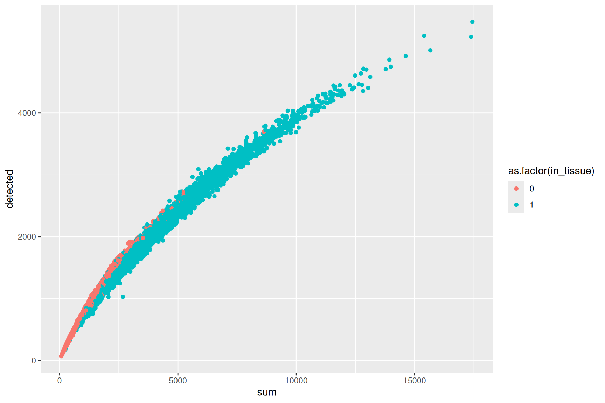
plotColData(spe, x='sum', y = 'subsets_Mito_percent', other_fields="in_tissue") + facet_wrap(~in_tissue)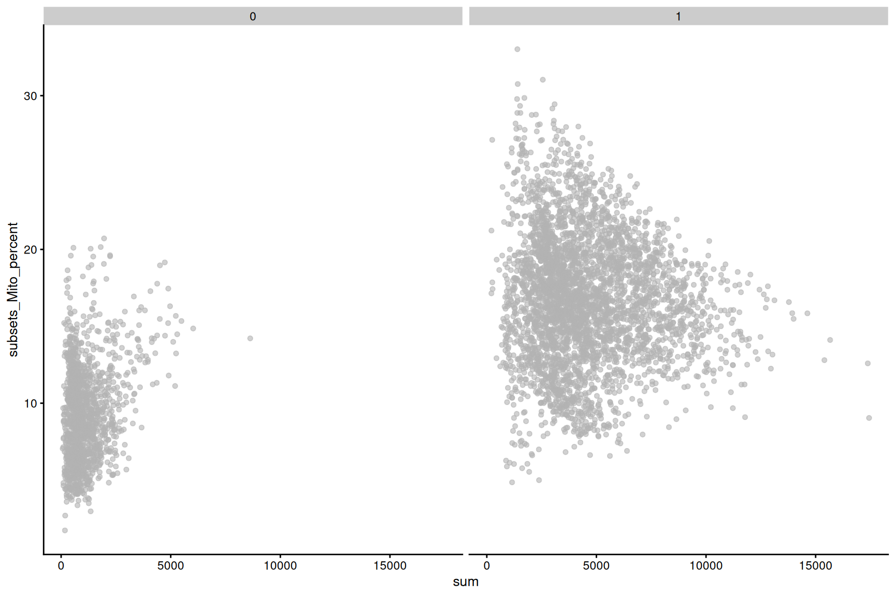
Firstly, we filter the data to retain the cells that are in the tissue. Then cell-specific biases are normalized using the computeSumFactors method.
spe <- spe[, spe$in_tissue == 1]
clusters <- quickCluster(
spe,
BPPARAM = BiocParallel::MulticoreParam(workers=2),
block.BPPARAM = BiocParallel::MulticoreParam(workers=2)
)
spe <- computeSumFactors(spe, clusters = clusters, BPPARAM = BiocParallel::MulticoreParam(workers=2))
spe <- logNormCounts(spe)Next, we use the Graph-based clustering method to do the reduction with the runPCA and runTSNE functions provided in the scater package.
# identify genes that drive biological heterogeneity in the data set by
# modelling the per-gene variance
dec <- modelGeneVar(spe)
# Get the top 15% genes.
top.hvgs <- getTopHVGs(dec, prop=0.15)
spe <- runPCA(spe, subset_row=top.hvgs)
output <- getClusteredPCs(reducedDim(spe), BPPARAM = BiocParallel::MulticoreParam(workers=1))
npcs <- metadata(output)$chosen
npcs## [1] 11reducedDim(spe, "PCAsub") <- reducedDim(spe, "PCA")[,1:npcs,drop=FALSE]
g <- buildSNNGraph(spe, use.dimred="PCAsub", BPPARAM = MulticoreParam(workers=2))
cluster <- igraph::cluster_walktrap(g)$membership
colLabels(spe) <- factor(cluster)
set.seed(123)
spe <- runTSNE(spe, dimred="PCAsub", BPPARAM = MulticoreParam(workers=2))2.1 Dimensional reduction plot
Here, we used the sc_dim function provided in the ggsc package to visualize the TSNE reduction result. Unlike other packages, ggsc implemented the ggplot2 graphic of grammar syntax and visual elements are overlaid through the combinations of graphic layers. The sc_dim_geom_label layer is designed to add cell cluster labels to a dimensional reduction plot, and can utilized different implementation of text geoms, such as geom_shadowtext in the shadowtext package and geom_text in the ggplot2 package (default) through the geom argument.
sc_dim(spe, reduction = 'TSNE') +
sc_dim_geom_label(
geom = shadowtext::geom_shadowtext,
color='black',
bg.color='white'
)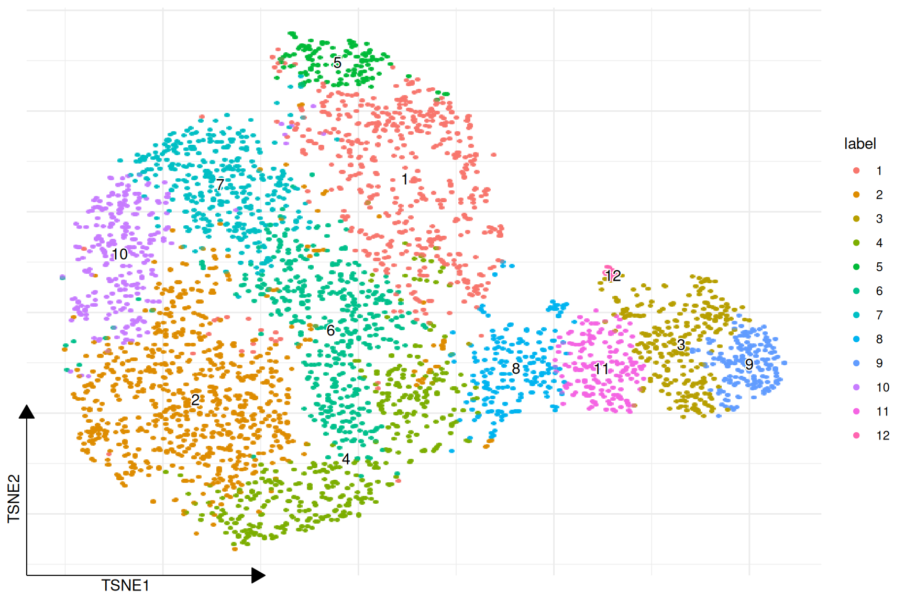
2.2 Visualize ‘features’ on a dimensional reduction plot
To visualize the gene expression of cells in the result of reduction, ggsc provides sc_feature function to highlight on a dimensional reduction plot.
genes <- c('MOBP', 'PCP4', 'SNAP25', 'HBB', 'IGKC', 'NPY')
target.features <- rownames(spe)[match(genes, rowData(spe)$gene_name)]
sc_feature(spe, target.features[1], slot='logcounts', reduction = 'TSNE')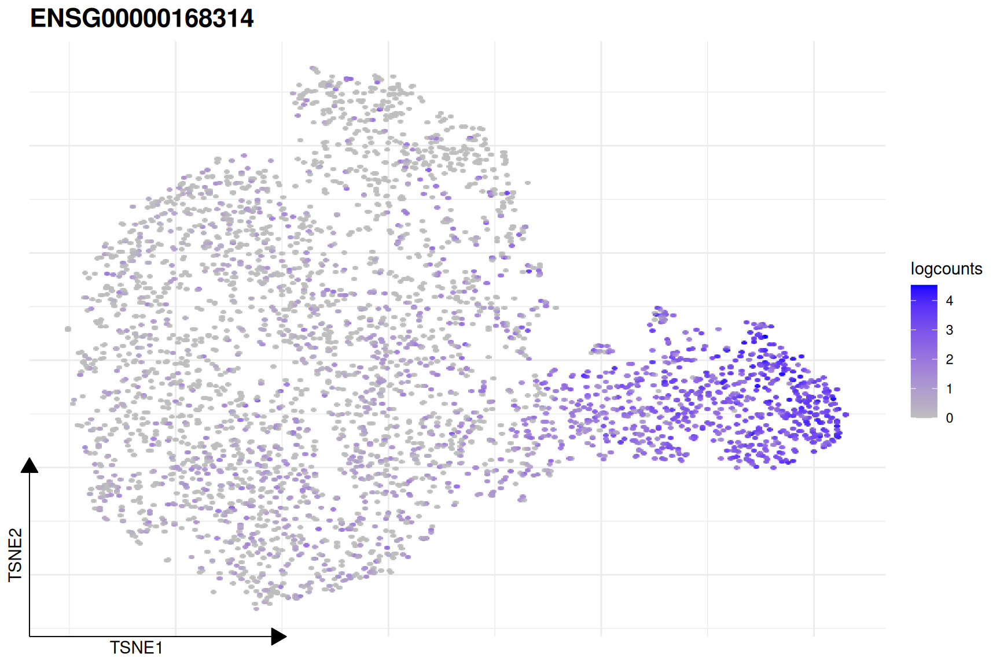
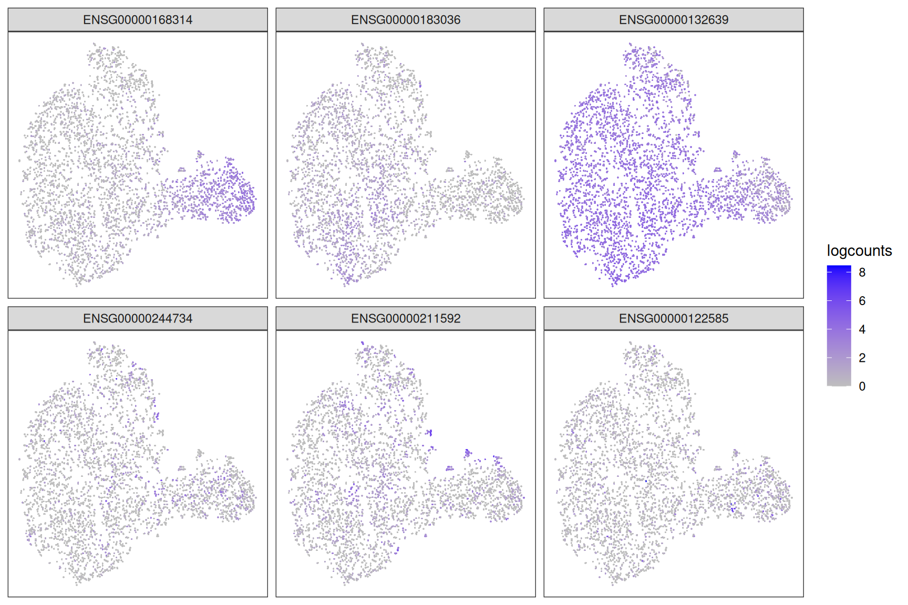
In addition, it provides sc_dim_geom_feature layer working with sc_dim function to visualize the cells expressed the gene and the cell clusters information simultaneously.
sc_dim(spe, slot='logcounts', reduction = 'TSNE') +
sc_dim_geom_feature(spe, target.features[1], color='black')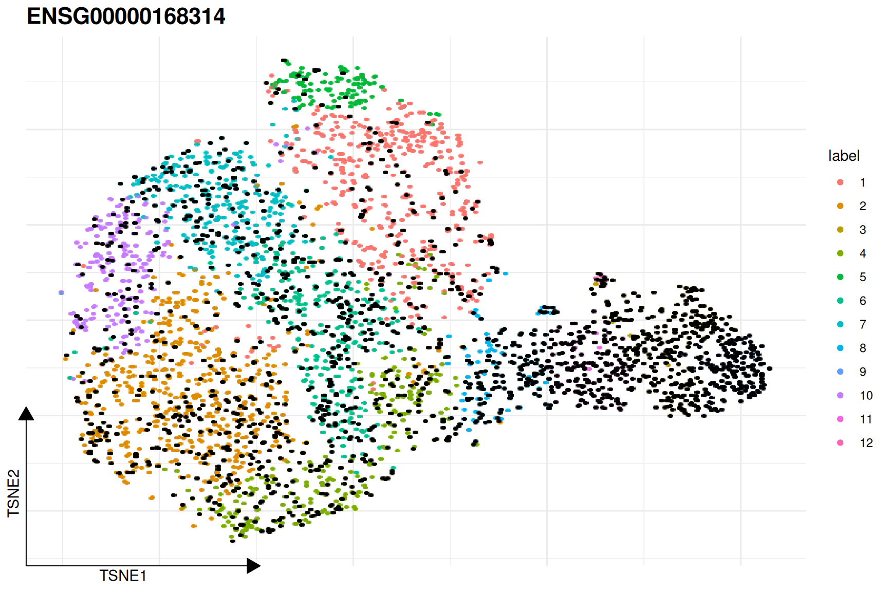
sc_dim(spe, alpha=.3, slot='logcounts', reduction = 'TSNE') +
ggnewscale::new_scale_color() +
sc_dim_geom_feature(spe, target.features, mapping=aes(color=features)) +
scale_color_viridis_d()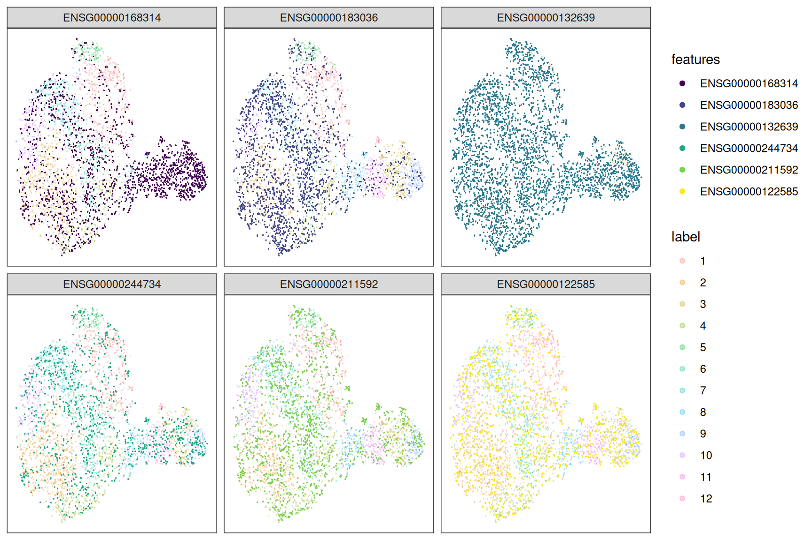
It also provides sc_dim_geom_ellipse to add confidence levels of the the cluster result, and sc_dim_geom_sub to select and highlight a specific cluster of cells.
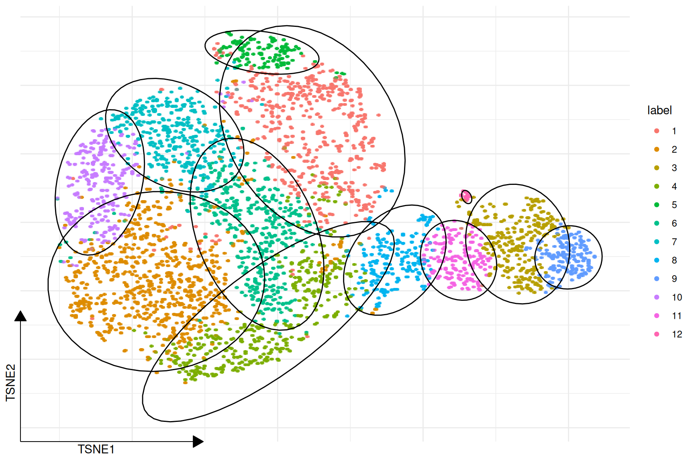
selected.cluster <- c(1, 6, 8)
sc_dim(spe, reduction = 'TSNE') +
sc_dim_sub(subset=selected.cluster, .column = 'label')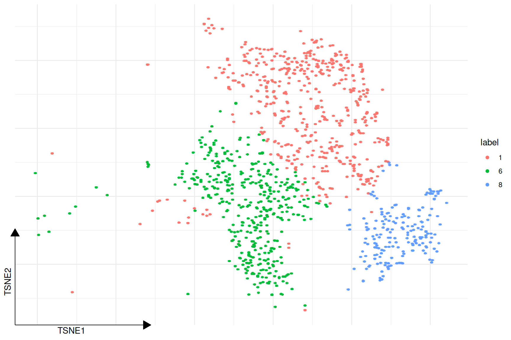
sc_dim(spe, color='grey', reduction = 'TSNE') +
sc_dim_geom_sub(subset=selected.cluster, .column = 'label') +
sc_dim_geom_label(geom = shadowtext::geom_shadowtext,
mapping = aes(subset = label %in% selected.cluster),
color='black', bg.color='white') 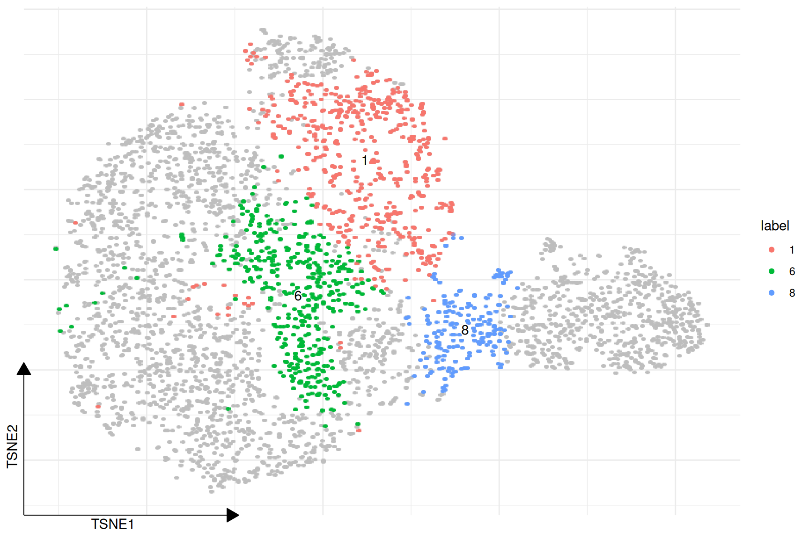
2.3 Dot plot for selected features
genes <- c('MOBP', 'PCP4', 'SNAP25', 'HBB', 'IGKC', 'NPY')
target.features <- rownames(spe)[match(genes, rowData(spe)$gene_name)]
sc_dot(spe, target.features, slot="logcounts")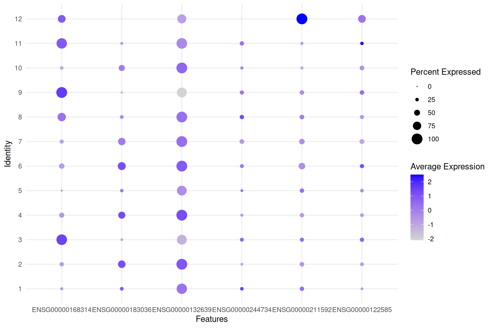
2.4 Violin plot of gene expression
ggsc provides sc_violin to visualize the expression information of specific genes using the violin layer with common legend, the genes can be compared more intuitively.
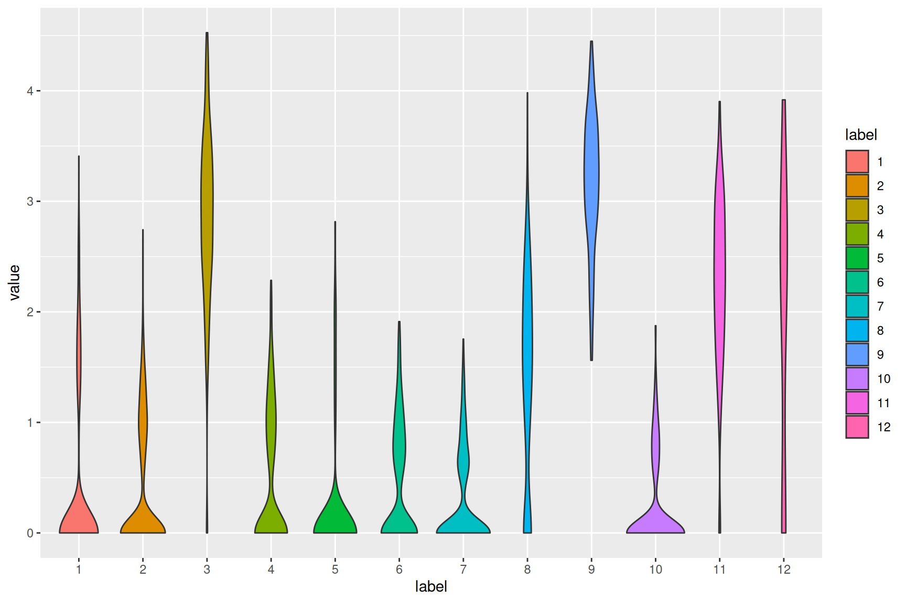
sc_violin(spe, target.features[1], slot = 'logcounts',
.fun=function(d) dplyr::filter(d, value > 0)
) +
ggforce::geom_sina(size=.1)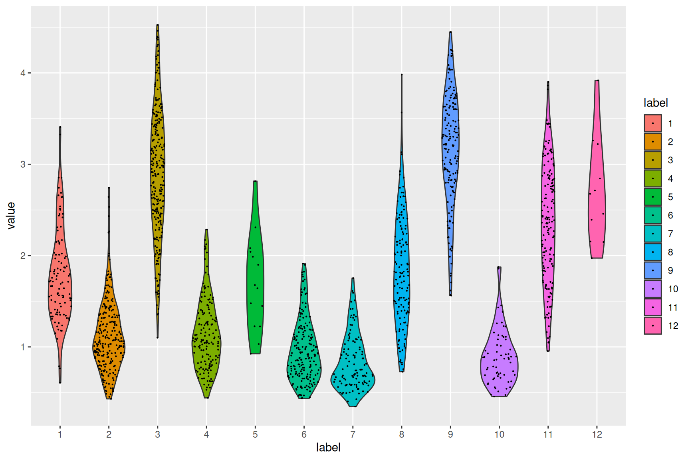
sc_violin(spe, target.features, slot = 'logcounts') +
theme(axis.text.x = element_text(angle=45, hjust=1))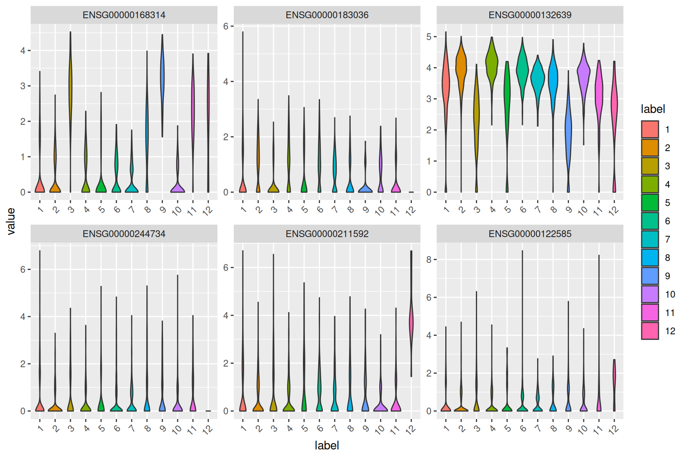
2.5 Spatial features
To visualize the spatial pattern of gene, ggsc provides sc_spatial to visualize specific features/genes with image information.
library(aplot)
f <- sc_spatial(spe, features = target.features,
slot = 'logcounts', ncol = 3,
image.mirror.axis = NULL,
image.rotate.degree = -90
)
f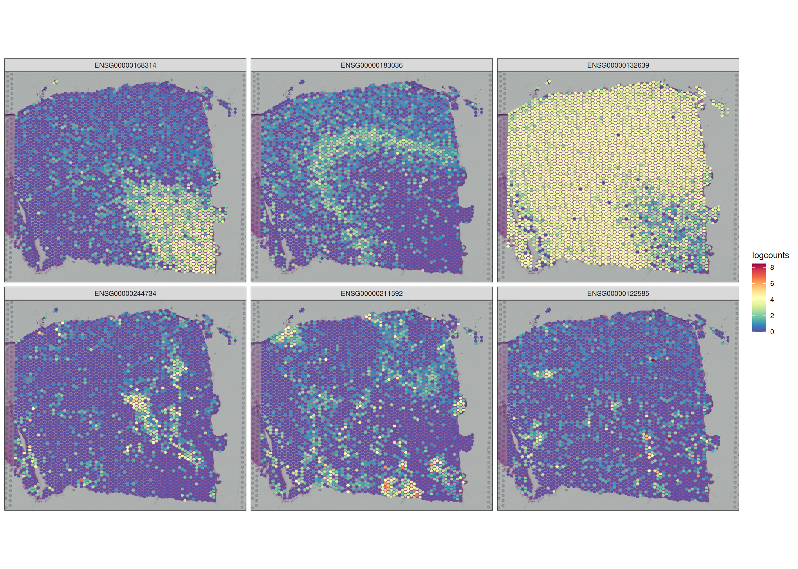
pp <- lapply(target.features, function(i) {
sc_spatial(spe, features = i, slot = 'logcounts',
image.rotate.degree = -90, image.mirror.axis = NULL)
})
aplot::plot_list(gglist = pp)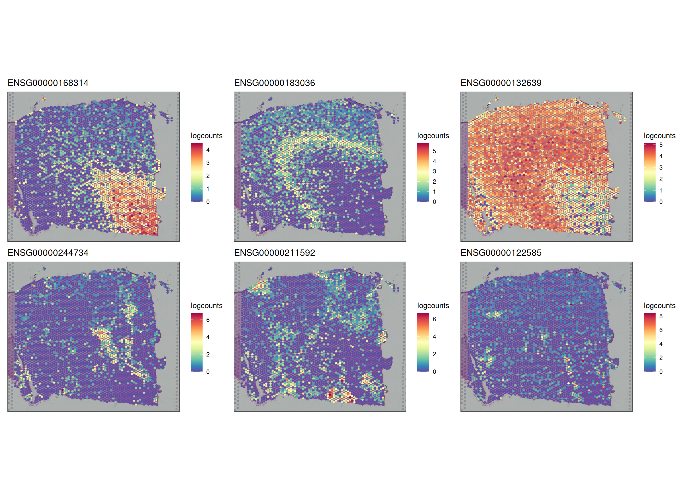
if (!requireNamespace('SVP', quietly=T)){
remotes::install_github("YuLab-SMU/SVP")
}
library(SVP)
lisa.res1 <- runLISA(spe,assay.type='logcounts', features=target.features[seq(2)], weight.method='knn', k=50)
lisa.da <- lapply(lisa.res1, function(x)x|> tibble::rownames_to_column(var='.BarcodeID')) |> dplyr::bind_rows(.id="features")
f1 <- sc_spatial(spe, features=target.features[1:2], mapping=aes(x=pxl_col_in_fullres,y=pxl_row_in_fullres), geom=geom_bgpoint, pointsize=1)
f2 <- sc_spatial(spe, features=target.features[1:2], mapping=aes(x=pxl_col_in_fullres,y=pxl_row_in_fullres), density=TRUE)
f1 <- f1 + sc_geom_annot(
data = lisa.da,
mapping = aes(bg_colour = cluster.test, subset = cluster.test == 'High'),
pointsize = 1,
bg_line_width = .3,
gap_line_width = .3
)
plot_list(f1, f2, ncol=1)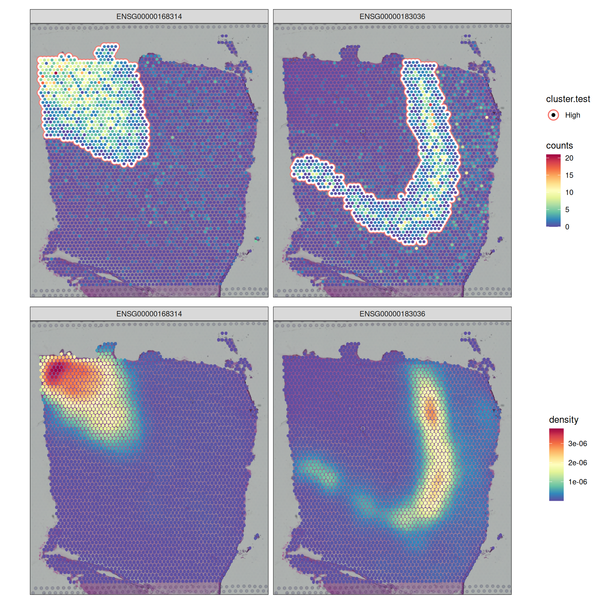
The same annotation is drawn in one call by plot_lisa_feature(). It takes the SpatialExperiment and the result of runLISA() and plots on the object’s spatialCoords, with one panel per feature:
plot_lisa_feature(spe, lisa.res = lisa.res1, features = target.features[seq(2)],
assay.type = 'logcounts', pointsize = 1, hlpointsize = 1,
gap_line_width = .3, bg_line_width = .3, ncol = 2)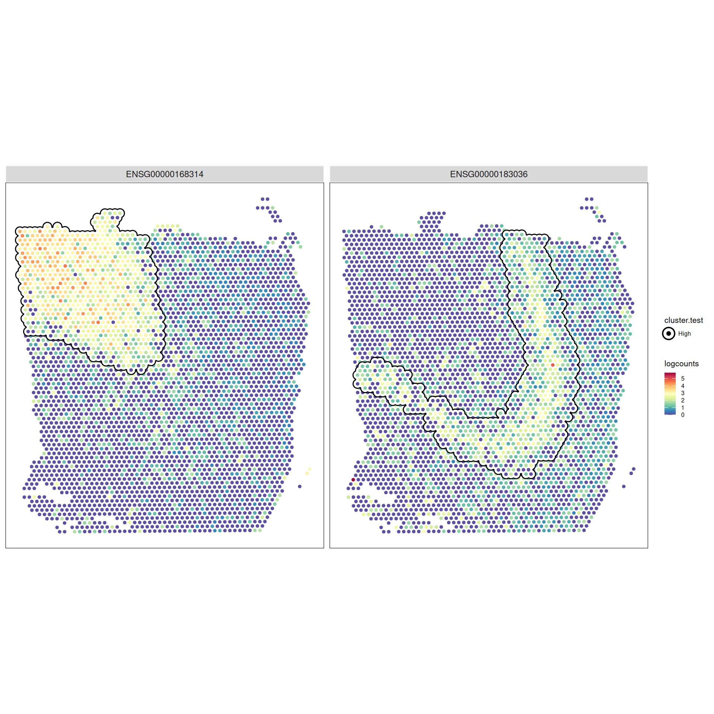
f3 <- sc_spatial(spe, features=target.features[1:2],
mapping=aes(x=pxl_col_in_fullres,y=pxl_row_in_fullres),
density=TRUE, joint=TRUE)
f4 <- sc_spatial(spe, features=target.features[1:2],
mapping=aes(x=pxl_col_in_fullres,y=pxl_row_in_fullres),
density=TRUE, joint=TRUE, common.legend=FALSE)
plot_list(f3, f4, ncol=1)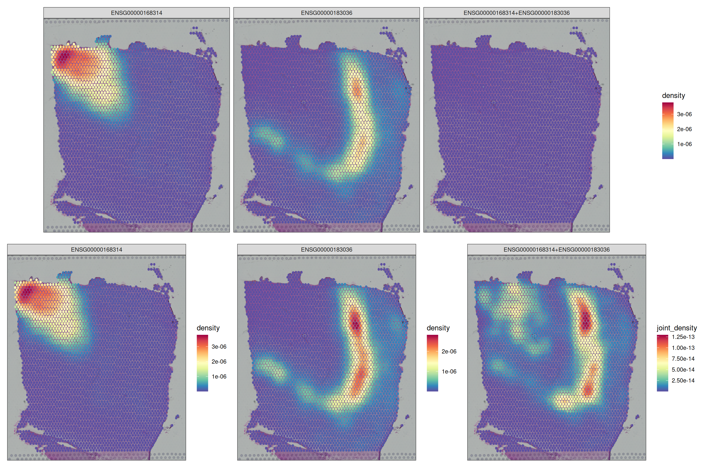
sc_spatial(spe, features=target.features, plot.pie=TRUE,
pie.radius.scale=.35, linewidth=0.1, image.plot=FALSE, color=NA)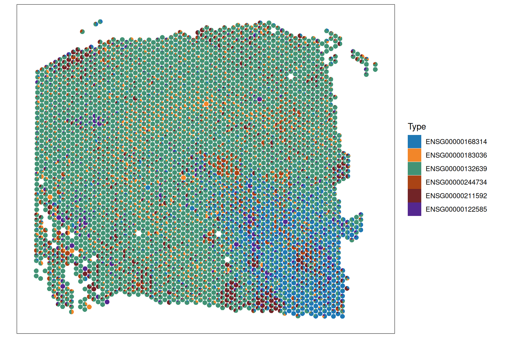
plot the spatial distribution of cell type.
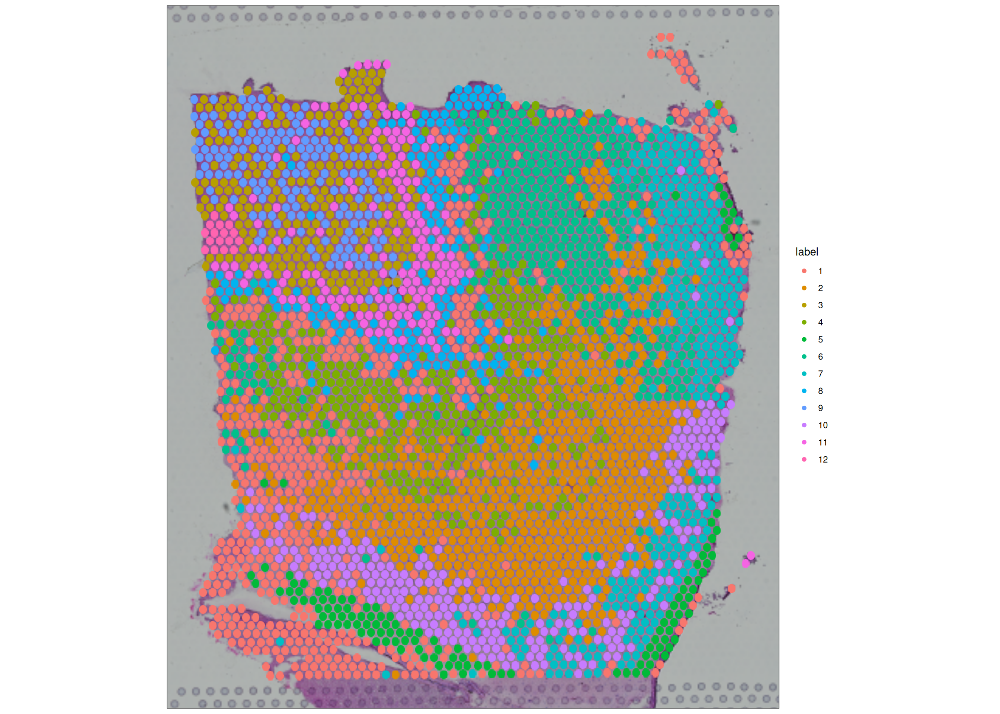